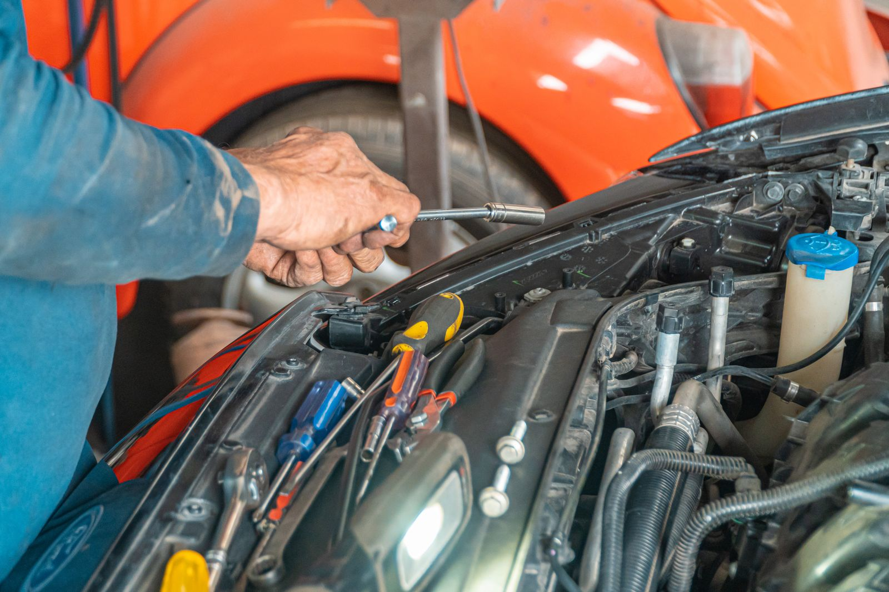

A oficina
Porquê o Centro Pneu Pato
O que os clientes destacam.
Sem marcação
"Trocam pneus sem marcação, na hora", escreve um cliente.
Bons preços
"Preços para todas as carteiras", diz o mesmo cliente.
Rapidez
"Rápido nos serviços e bom preço", escreve outro.
64avaliações no Google
2014ano de abertura